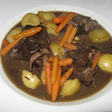

"French"
is tagged on
53 Recipes
Results: 1 - 10 of 53

This is a well known traditional French recipe. It is a stew prepared with beef braised in Burgundy, beef broth, onions, garlic, and mushrooms.

Creme brulee, French for burnt cream, is a custard dessert topped with a layer of burnt suger. It is served cold and traditionally flavored with vanilla.


A delicious soup made from beef stock, onion and cheese. This traditional soup will be sure to warm you up.